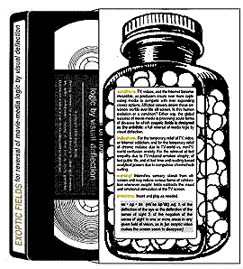

(back
cover text)
conditions:
TV, videos, and the Internet become irresistible, as producers create
ever more captivating media to compete with ever expanding viewer
options. Afflicted viewers desire these on-screen worlds over life
off-screen. Is this human evolution or a condition? Either
way, the global success of movie-media is provoking acute forms
of dis-ease for which exoptic fields is designed as the
antidote: a full reversal of media logic by visual deflection.
|

|
|
indications:
For the temporary relief of TV, video, or Internet addiction; and
for the temporary relief of chronic malaise due to TV-world vs.
nonTV-world confusion anxiety. For the retrieval of lost empathy
due to TV-induced emotion atrophy; of lost public life; and of lost
time and reading-based analytical powers due to compulsive channel/web
surfing.
warning!
Intensifies sensory stimuli from off-screen and may induce various
forms exhilar-ation when exoptic fields subtracts TV-area
visual and emotional stimulation of the TV screen.
directions:
Insert and play as needed.
|
|
(box top edge)
active ingredient: One hour of exoptic fields recorded on
magnetic tape that play back as specific liquid surfaces, colors,
luminance's, and forms, including a static brick wall, all arranged
and set in motion precisely to deflect viewers' eyes from any surface
upon which they appear.
inactive ingredient: Approx. one minute introduction and
glimpse of movie-mediascape history.
(box spine, left from cover)
EXOPTIC FIELDS for the reversal of
movie-media logic by visual deflection
|
may relieve TV and INTERNET ADDICTION
|
by willy mal
blind eye
media
(box spine, right from cover, production credits)
exoptic fields produced&designed by
willy mal
collaborators: • image&fx: vid-savant
Matt Dibble, pixel pusher Benton Bainbridge & animator Eric Solstein
• music: Joe Mendelsson droneclickskiploop
sample: Gen Ken voice: Catherine Adamidi
• production: digital media zone,
NYC • cover design: Bob Gill
|